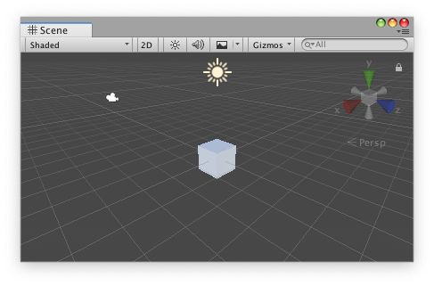
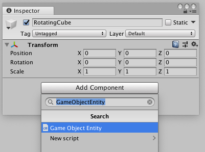
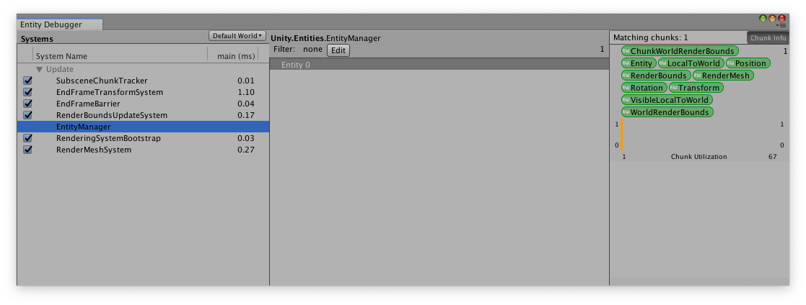
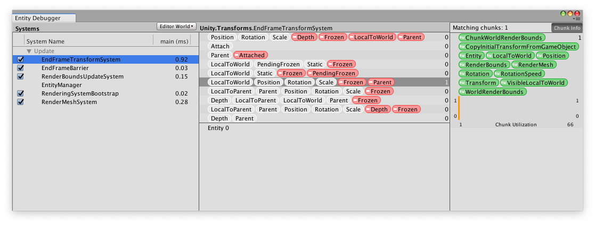
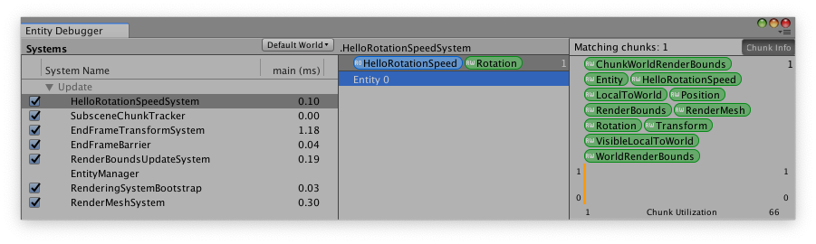

Hello (ECS) World
The HelloECS examples in the Unity ECS Samples project demonstrate the basics of using ECS in a Unity project. These basic examples include:
- HelloCube — creates a single rotating cube. This example demonstrates how to use some of the Transform components provided by the ECS API as well as how to create your own components and systems.
- HelloCubes — builds on HelloCube, adding a second, moving cube to the scene.
- HelloSpawnACube — demonstrates how to spawn a cube Entity at runtime based on a Prefab "archetype" object.
While the above examples are very basic, the Samples project also contains the Boids example, a more complex scenario with thousands of Entities. Boids simulates an underwater scene with a shark and schools containing thousands of fish. (It uses the classic Boids flocking algorithm for the schooling fish behavior.)
This article walks through the process of recreating the HelloCube example. You can use the code in the existing sample as reference during a quick read-though, but we recommend putting together a fresh project in Unity to get the most out of this discussion.
Preliminaries:
To begin set up a Project to use ECS:
- Open the Unity Editor (2018.3 or later)
- Create a new Project.
- Open the Package Manager (menu: Window > Package Manager).
- Click the Advanced button at the top of the window and turn on the Show preview packages option.
Add the following packages to the project:
- Entities
- Hybrid.Renderer
Adding the Entities package to your Project also adds the following packages:
- Burst
- Collections
- Jobs
- Mathematics
For complete requirements, see System Requirements.
Rotating cube
The Hello Cube example rotates a single cube.

To create this example, you can use the default, Sample scene that Unity provides for a new Project or you can create a new scene in the Editor.
To get started, add an empty GameObject to the scene, naming it "RotatingCube".
Next, add the following ECS Components to your RotatingCube:
- GameObjectEntity
- CopyInitialTransformFromGameObjectComponent
- PositionComponent
- RotationComponent
These Components are included in the ECS packages. They extend the ComponentDataProxy, which allows you to use the normal Add Component button in the Inspector window:

The GameObjectEntity component converts a normal GameObject to an Entity. When the scene loads, the ECS system creates an Entity for each GameObject containing this type of Component and copies all of the ECS-type Components on that GameObject to the Entity.
The CopyInitialTransformFromGameObjectComponent is a "marker" or “tag” component. It contains no data, but it allows the CopyTransformFromGameObject System to find Entities that need to copy their initial data from the UnityEngine.Transform object. This system is primarily a convenience to make it easy to place Entities in the Unity Editor.
The PositionComponent and RotationComponent components contain simple data types defined in the Unity.Mathematics package (a float3 vector for position and a quaternion for rotation). To let you add these components to a GameObject, these hybrid Component classes act as wrappers for the underlying data structs that are used by ECS. For example, the PositionComponent class is defined as:
using System;
using Unity.Entities;
using Unity.Mathematics;
namespace Unity.Transforms
{
[Serializable]
public struct Position : IComponentData
{
public float3 Value;
}
[UnityEngine.DisallowMultipleComponent]
public class PositionComponent : ComponentDataProxy<Position> {}
}
The ComponentDataProxy class is a normal Unity Component, which is why you can add these objects to a GameObject. See ComponentDataProxy for more information.
When Unity initializes a GameObject containing a GameObjectEntity Component, GameObjectEntity looks for ComponentDataProxy classes on the same GameObject and adds the IComponentData structs for those classes to the Entity.
Next, add a RenderMeshComponent to the Cube. The current Hybrid Render system uses the data from this component to render the Entity. Set the Mesh to Cube and the Material to Default-Material (or you can create a more interesting Material Asset).
If you press Play, you should see a static rendered cube. The scene still uses the normal Unity Camera and Lights. Notice that the cube moves to the initial position and orientation you entered using the Transform properties in the inspector, but that changing the Transform values in play mode has no effect — these values are copied at startup because of the CopyInitialTransformFromGameObjectComponent.
Aside: The Entity Debugger
Before we talk about how to create a custom Component and System to rotate our cube, let’s take a moment to look at the Entity Debugger window. This window gives you insight into how the ECS system has organized your data and which systems are actually running.
While still in Play mode, open the Entity Debugger window (menu: Window > Analysis > Entity Debugger). The list of Systems on the left shows all the active Systems and the amount of execution time each System uses on the main thread.
Under Systems, click on the EntityManager. In the middle, System details area of the window, you can see our solitary Entity listed. When you select an Entity in the Entity Debugger window, the Unity Inspector also updates to show the data associated with the selected Entity.

On the right side of the Entity Debugger, the Chunk Info section shows the ECS Components for an Entity. (A Chunk is a block of memory that is managed by the ECS system and which contains the data components of that Entity.) Notice that all the components we added to our cube are shown, along with a few others. These other Components, like RenderBounds and VisibleLocalToWorld are added by one system to store the data needed by a subsequent system (for example, the bounds are needed by the rendering system). Since we only have one Entity, ECS only allocates one Chunk of memory. If we spawned more Entities with the same Components, the EntityManager fills up the existing Chunks before it allocates another. A Chunk only contains data for Entites that have the exact same Components. If we created a second Entity in this Project and added a ScaleComponent, that Entity would go into a different Chunk even when all the other Components are the same. The Matching chunks display shows how many Chunks are currently allocated.
Next, select the EndFrameTransformSystem under Systems. EndFrameTransformSystem is the default system that updates the transform data of Entities based on their current Position, Rotation, and Scale Components.

The System detail area now shows the sets of components the selected system works with. The number of Entities matching each set is listed to the right.
As an experiment, add a Frozen component to the cube (still in playmode). Notice how the EndFrameTransformSystem stops running. If a system does not find Entities with the correct set of components, the system does not run. To continue, remove (or disable) the Frozen component so that the EndFrameTransformSystem resumes.
The Entity Debugger provides a useful view into your ECS data and Systems. Use it to help determine why things happen, or don’t happen, when they should, as well as to just help understand the how your program is working.
Rotating the Cube
So far, we have used pre-made Components, now let’s create a custom ECS component and system to animate the cube rotation.
In a MonoBehaviour, we would rotate a 3D object with something like this:
using UnityEngine;
public class Rotator : MonoBehaviour
{
public float Speed = 50.0f;
void Update()
{
// Speed degrees per second
this.transform.Rotate(Vector3.up, Speed * Time.deltaTime);
}
}
In ECS, we separate the data, which is the rotation speed in this case, into a Component and the behavior into a System. This way, we can update every Entity that changes its rotation in one efficient loop instead of calling a different Update() function on each object, which has to fetch data from scattered memory locations, making very inefficient use of modern CPU architecture.
In order to put the rotation speed data component on a GameObject, we use the same technique as the Position and Rotation components we already looked at. Namely, we define a struct implementing IComponentData and a class extending ComponentDataProxy:
using System;
using Unity.Entities;
[Serializable]
public struct RotationSpeed: IComponentData
{
public float Value;
}
[UnityEngine.DisallowMultipleComponent]
public class HelloRotationSpeedComponent : ComponentDataProxy<RotationSpeed>{}
Note: The DisallowMultipleComponent attribute is optional, but it prevents you from accidentally putting the same component on the GameObject more than once. The ECS system only allows one instance of a data component to be assigned to the same Entity, so there is no reason to allow someone to add two of the same component to a GameObject in the Editor.
For the system that reads this data and updates the transform, we need to implement a JobComponentSystem class. This class has two main sections, a struct implementing IJobProcessComponentData, which defines the system’s job, and an OnUpdate() method that schedules that job to be run. OnUpdate() is very similar to the MonoBehaviour.Update() method — the ECS system calls this function every frame which means that this job is scheduled every frame.
Let’s look at the IJobProcessComponentData struct:
[BurstCompile]
struct HelloRotationSpeedJob : IJobProcessComponentData<Rotation, HelloRotationSpeed>
{
public float dT;
public void Execute(ref Rotation rotation, [ReadOnly] ref HelloRotationSpeed rotSpeed)
{
rotation.Value = math.mul(math.normalize(rotation.Value),
quaternion.AxisAngle(math.up(), rotSpeed.Value * dT));
}
}
The [BurstCompile] attribute tells Unity that this job is compatible with the Burst compiler. The Burst compiler produces much faster machine code than the general purpose C# compiler, but it can only do so if the code conforms to a strict (though easy to follow) set of rules. See Burst Compiler for more information.
In the struct signature, IJobProcessComponentData<Rotation, HelloRotationSpeed>, means that the system operates on the Rotation and HelloRotationSpeed components. Rotation is the Entity data we need to update and HelloRotationSpeed is the data that tells us how fast to rotate. The struct also defines a field, dT, which holds the amount of time that has elapsed since the previous frame. The dT value is set when the job is scheduled.
Finally, the struct’s Execute() method defines the actual work to be done. The Execute() method can only take parameters matching the generic parameters used to define the struct in the first place, namely a Rotation and a HelloRotationSpeed component. The [ReadOnly] attribute is assigned to the HelloRotationSpeed parameter. This helps the job scheduler since it knows that it can schedule multiple jobs that read HelloRotationSpeed in parallel, if possible. If we forgot to assign this attribute, any systems accessing HelloRotationSpeed would have to run in sequence. Of course, we ARE updating Rotation, so that parameter is read-write (by default).
Note: The ref modifier indicates that the parameters are passed to the function by reference. Since structs are value types in C#, we would get a copy of our components if we didn’t specify pass-by-reference. That would result in the Execute() function updating the copy, which is then thrown away when the function exits, instead of the data stored in our entity arrays.
To rotate the cube, Execute() uses the AxisAngle() function from the Unity.Mathematics package, which provides common math routines implemented so that they are compatible with Burst. This part of the IJobProcessComponentData will, of course, be different for each system. The function creates a rotation quaternion based on the HelloRotationSpeed Component value and the dT field. It then multiplies the current value of the Rotation Component with this rotation quaternion and then assigns the result back to the Rotation Component.
The second part of the System is the OnUpdate() function. The ECS system calls this function once per frame. Your custom systems must override OnUpdate() to create and schedule a Job:
protected override JobHandle OnUpdate(JobHandle inputDependencies)
{
var job = new HelloRotationSpeedJob()
{
dT = Time.deltaTime
};
return job.Schedule(this, inputDependencies);
}
In this example, the function creates an instance of the HelloRotationSpeedJob struct, setting its dT field to the current delta time from the Unity Time class. The JobHandle parameter passed to the OnUpdate() function contains any Job dependencies determined by the ECS system. You must pass this value on when you schedule the job for the system.
Put together, the HelloRotationSpeedSystem looks like this:
using Unity.Burst;
using Unity.Collections;
using Unity.Entities;
using Unity.Jobs;
using Unity.Mathematics;
using Unity.Transforms;
using UnityEngine;
public class HelloRotationSpeedSystem : JobComponentSystem
{
[BurstCompile]
struct HelloRotationSpeedJob : IJobProcessComponentData<Rotation, HelloRotationSpeed>
{
[ReadOnly] public float dT;
public void Execute(ref Rotation rotation, [ReadOnly] ref HelloRotationSpeed rotSpeed)
{
rotation.Value = math.mul(math.normalize(rotation.Value),
quaternion.AxisAngle(math.up(), rotSpeed.Value * dT));
}
}
protected override JobHandle OnUpdate(JobHandle inputDependencies)
{
var job = new HelloRotationSpeedJob()
{
dT = Time.deltaTime
};
return job.Schedule(this, inputDependencies);
}
}
Press the Play button to see the cube rotate. Open the Entity Debugger to see that it now lists our HelloRotationSpeedSystem that operates on Entities with a HelloRotationSpeed and a Rotation Component.

Notice that we did not have to include any code to turn on the system. By default, the ECS system automatically runs any systems for which there are Entities with the requisite groups of Component.
Conclusion
In this article, we examined how to add ECS Components to GameObjects so that we could convert them into Entities. At a minimum, you add a GameObjectEntity Component, which performs the conversion. For most GameObjects, you would also add transform-related Components like Position, Rotation, and Scale and rendering-related components, like RenderMesh.
We also examined how to create custom data Components and behavior Systems. This involved:
Implementing a ComponentDataProxy class that wraps an IComponentData struct to create a Component.
Implementing an JobComponentSystem struct whose Execute() function defines the work to be done by the System and whose OnUpdate() function schedules that work with the Unity Job system.